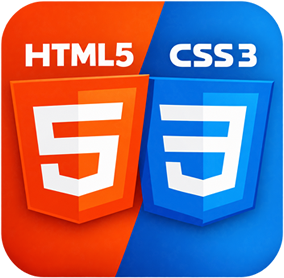
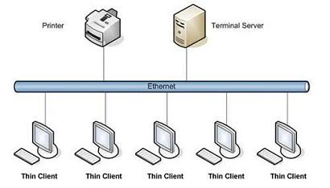

Estas dos líneas están separadas entre sí utilizando las etiquetas , ambas están contenidas dentro del mismo


Los formularios fueron una de las primeras mejoras que se dieron a conocer de HTML5 y de las que más revuelo causaron, sobre todo por su gran capacidad de autovalidación de una manera extremadamente fácil y sin necesidad de utilizar JavaScript.
Tema 9: Imágenes de fondo Tema 11: Cajas flotantes (float) Tema 13: Flex, sin dolor Tema 14: Posición de los elementos (position) Tema 15: Transformaciones (transform) Tema 18: Transiciones (transition) Tema 19: Columnas de texto Tema 21: Audio Tema 22: Transparencias y degradados Tema 23: Animaciones (animation) Tema 24: SVG (gráficos vectoriales) Tema 25: Canvas Tema 26: Adaptación a móviles (mediaqueries) Tema 27: Contenido editable Tema 28: Storage